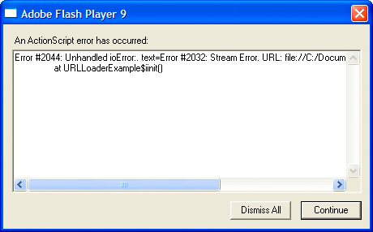

Event listeners
Event listeners, which are also called event handlers, are functions that OpenFL executes in response to specific events. Adding an event listener is a two-step process. First, you create a function or class method for OpenFL to execute in response to the event. This is sometimes called the listener function or the event handler function. Second, you use the addEventListener() method to register your listener function with the target of the event or any display list object that lies along the appropriate event flow.
Creating a listener function
The creation of listener functions is one area where the OpenFL event model deviates from the DOM event model. In the DOM event model, there is a clear distinction between an event listener and a listener function: an event listener is an instance of a class that implements the EventListener interface, whereas a listener function is a method of that class named handleEvent(). In the DOM event model, you register the class instance that contains the listener function rather than the actual listener function.
In the OpenFL event model, there is no distinction between an event listener and a listener function. OpenFL does not have an EventListener interface, and listener functions can be defined outside a class or as part of a class. Moreover, listener functions do not have to be named handleEvent()—they can be named with any valid identifier. In OpenFL, you register the name of the actual listener function.
Listener function defined as a local function
The following code creates a simple project that displays a red square shape. A listener function named clickHandler(), which is not part of a class, listens for mouse click events on the red square.
package;
import openfl.display.Sprite;
import openfl.events.MouseEvent;
class ClickExample extends Sprite {
public function new () {
var child = new ChildSprite ();
addChild (child);
}
}
class ChildSprite extends Sprite {
public function new () {
graphics.beginFill (0xFF0000);
graphics.drawRect (0, 0, 100, 100);
graphics.endFill ();
var clickHandler = function (event:MouseEvent) {
trace ("clickHandler detected an event of type: " + event.type);
trace ("the this keyword refers to: " + this);
}
addEventListener (MouseEvent.CLICK, clickHandler);
}
}
When a user interacts with the resulting project by clicking on the square, OpenFL generates the following trace output:
clickHandler detected an event of type: click
the this keyword refers to: [object ChildSprite]
Notice that the event object is passed as an argument to clickHandler(). This allows your listener function to examine the event object. In this example, you use the event object's type property to ascertain that the event is a click event.
The example also checks the value of the this keyword. In this case, this represents the Sprite object, because Haxe preserves the scope when creating functions.
Listener function defined as a class method
The following example is identical to the previous example that defines the ClickExample class except that the clickHandler() function is defined as a method of the ChildSprite class:
package;
import openfl.display.Sprite;
import openfl.events.MouseEvent;
class ClickExample extends Sprite {
public function new () {
var child = new ChildSprite ();
addChild (child);
}
}
class ChildSprite extends Sprite {
public function new () {
graphics.beginFill (0xFF0000);
graphics.drawRect (0, 0, 100, 100);
graphics.endFill ();
addEventListener (MouseEvent.CLICK, clickHandler);
}
private function clickHandler (event:MouseEvent):Void {
trace ("clickHandler detected an event of type: " + event.type);
trace ("the this keyword refers to: " + this);
}
}
When a user interacts with the resulting project by clicking on the red square, OpenFL generates the following trace output:
clickHandler detected an event of type: click
the this keyword refers to: [object ChildSprite]
Managing event listeners
You can manage your listener functions using the methods of the IEventDispatcher interface. The IEventDispatcher interface is the OpenFL version of the EventTarget interface of the DOM event model. Although the name IEventDispatcher may seem to imply that its main purpose is to send (or dispatch) event objects, the methods of this class are actually used much more frequently to register event listeners, check for event listeners, and remove event listeners. The IEventDispatcher interface defines five methods, as shown in the following code:
package openfl.events;
interface IEventDispatcher {
public function addEventListener (type:String, listener:Dynamic->Void, useCapture:Bool = false, priority:Int = 0, useWeakReference:Bool = false):Void;
public function dispatchEvent (event:Event):Bool;
public function hasEventListener (type:String):Bool;
public function removeEventListener (type:String, listener:Dynamic->Void, useCapture:Bool = false):Void;
public function willTrigger (type:String):Bool;
}
The OpenFL API implements the IEventDispatcher interface with the EventDispatcher class, which serves as a base class for all classes that can be event targets or part of an event flow. For example, the DisplayObject class inherits from the EventDispatcher class. This means that any object on the display list has access to the methods of the IEventDispatcher interface.
Adding event listeners
The addEventListener() method is the workhorse of the IEventDispatcher interface. You use it to register your listener functions. The two required parameters are type and listener. You use the type parameter to specify the type of event. You use the listener parameter to specify the listener function that will execute when the event occurs. The listener parameter can be a reference to either a function or a class method.
Do not use parentheses when you specify the listener parameter. For example, the clickHandler() function is specified without parentheses in the following call to the addEventListener() method:
addEventListener (MouseEvent.CLICK, clickHandler);
The useCapture parameter of the addEventListener() method allows you to control the event flow phase on which your listener will be active. If useCapture is set to true, your listener will be active during the capture phase of the event flow. If useCapture is set to false, your listener will be active during the target and bubbling phases of the event flow. To listen for an event during all phases of the event flow, you must call addEventListener() twice, once with useCapture set to true, and then again with useCapture set to false.
The priority parameter of the addEventListener() method is not an official part of the DOM Level 3 event model. It is included in OpenFL to provide you with more flexibility in organizing your event listeners. When you call addEventListener(), you can set the priority for that event listener by passing an integer value as the priority parameter. The default value is 0, but you can set it to negative or positive integer values. The higher the number, the sooner that event listener will be executed. Event listeners with the same priority are executed in the order that they were added, so the earlier a listener is added, the sooner it will be executed.
The useWeakReference parameter allows you to specify whether the reference to the listener function is weak or normal. Setting this parameter to true allows you to avoid situations in which listener functions persist in memory even though they are no longer needed. OpenFL use a technique called garbage collection to clear objects from memory that are no longer in use. An object is considered no longer in use if no references to it exist. The garbage collector disregards weak references, which means that a listener function that has only a weak reference pointing to it is eligible for garbage collection.
The
useWeakReferenceparameter is currently disregarded, as JavaScript (and other OpenFL target platforms) do not support weak memory references. Do not rely upon this parameter—instead you should remove event listeners to allow garbage collection.
Removing event listeners
You can use the removeEventListener() method to remove an event listener that you no longer need. It is a good idea to remove any listeners that will no longer be used. Required parameters include the eventName and listener parameters, which are the same as the required parameters for the addEventListener() method. Recall that you can listen for events during all event phases by calling addEventListener() twice, once with useCapture set to true, and then again with it set to false. To remove both event listeners, you would need to call removeEventListener() twice, once with useCapture set to true, and then again with it set to false.
Dispatching events
The dispatchEvent() method can be used by advanced programmers to dispatch a custom event object into the event flow. The only parameter accepted by this method is a reference to an event object, which must be an instance of the Event class or a subclass of the Event class. Once dispatched, the target property of the event object is set to the object on which dispatchEvent() was called.
Checking for existing event listeners
The final two methods of the IEventDispatcher interface provide useful information about the existence of event listeners. The hasEventListener() method returns true if an event listener is found for a specific event type on a particular display list object. The willTrigger() method also returns true if a listener is found for a particular display list object, but willTrigger() checks for listeners not only on that display object, but also on all of that display list object’s ancestors for all phases of the event flow.
Error events without listeners
Exceptions, rather than events, are the primary mechanism for error handling in Haxe, but exception handling does not work for asynchronous operations such as loading files. If an error occurs during such an asynchronous operation, OpenFL dispatches an error event object. If you do not create a listener for the error event, the debugger versions of Flash Player will bring up a dialog box with information about the error, or messages will be displayed in console output on other platforms. For example, the debugger version of Flash Player produces the following dialog box describing the error when the application attempts to load a file from an invalid URL:

Most error events are based on the ErrorEvent class, and as such will have a property named text that is used to store the error message that OpenFL displays. The two exceptions are the StatusEvent and NetStatusEvent classes. Both of these classes have a level property (StatusEvent.level and NetStatusEvent.info.level).
When the value of the level property is "error", these event types are considered to be error events.
An error event will not cause dynamic platforms (such as HTML5 or Flash Player) to stop running, but will stop execution on all other platforms. It will manifest as a dialog box on the debugger versions of Flash Player, and will not manifest in release versions of Flash Player.